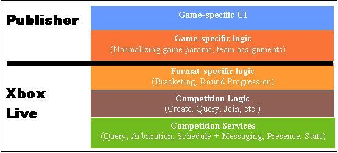

By Michal Bortnik, Program Manager, Xbox Live
Seeking out competition with other players is a common reason why video game players venture online. Competitive play on Xbox Live today, however, is limited to little more than scoreboard postings and independent Web sites tracking related game scores. Structured online competitions still hold an untapped potential for generating a lasting player community around a title and extending shelf-life. The competitive race of differentiating from other titles via tournaments has already begun. Xbox Live is meeting this new challenge head-on with the Xbox Live Competitions services.
The target audience of this white paper is game developers who are investigating online tournaments. The goal of this document is to help you understand what's required to build tournaments on Xbox Live and give you a sense of the implementation costs. To accomplish that goal, this paper describes the new infrastructure for online competitions provided by Xbox Live and calls out common implementation issues.
This white paper does not provide specific instructions on how to use the individual functions nor does it provide best practices. For these topics, see the upcoming white paper, "Single Elimination Tournaments on Xbox Live."
The chances are that each person you ask will come up with a different definition of the word tournament. This is probably because we have a universe of competition formats out there, from the real-world FIFA World Cup and Olympic Games to fantasy football and BattleNet Ladders on PC.
To avoid confusion later on, you should decide:
The remainder of this section will guide you in making the best decisions.
Xbox Live provides a complete infrastructure for two tournament formats, namely Single Elimination (SE) and Multilevel (ML). Some amount of customization is allowed, but you still need to choose your base format. SE format is the most widely known tournament format, but ML takes better advantage of the online environment. SE offers more structure, but ML accommodates many more players. Acquaint yourself with the details of both and choose which suits your title best. If the answer is neither, then our flexible infrastructure may still meet you needs. Talk to your Technical Game Manager about the format you have in mind.
Possible answers are players, publisher or both. Publisher-managed tournaments give the publisher more control over each tournament, but at the same time require a real person to "baby-sit" them. Publisher-managed tournaments don't require a title to build tournament management UI because Xbox Live provides a Comp Manager tool for this very purpose. Lastly, publisher-managed tournaments accommodate up to 1024 players in Single Elimination format and up to 64,000 players in the Multilevel, as opposed to 128 players for player-managed tournaments in Single Elimination format.
On the other hand, implementing player-managed tournaments virtually guarantees a much higher participation, because it shifts the burden of managing tournaments onto empowered players, which typically outnumber the publisher staff. The downside of this option is the additional cost of building tournament management UI for individual players.
Playing in tournament matches is not the only part of playing in a tournament. Recruitment, registration, bracketing, stats, and some smack-talk all contribute to a superior tournament experience. But where do players go to get some of that "tournament experience"? It's clear that the game play itself happens on the Xbox, but what about everything else? The two main options here are in-game and Web. Building a complete in-game experience captures the player's complete attention, but is a far more expensive proposition than sharing the burden with the Web. Anchoring your tournament scenarios on the Web, on the other hand, offer a greater potential for customization, cross-title integration, more direct contact with players, and so on.
| Format | Managed by | Managed from | Max Players | Round Schedule |
|---|---|---|---|---|
| Single Elimination | Players or Publisher | Web or in-game | 128 if player-managed; 1024 if publisher-managed |
Back-to-back, Daily, or Weekly |
| Multilevel | Publisher only | Web or in-game | 64,000 | Back-to-back only |
This section introduces new Xbox Live services and tools that enable structured competitive play. After reading this section, you should have a good idea how much tournament-related functionality is already waiting for you.
The new Xbox Live services that you need to become familiar with are Query, Scheduling, and Arbitration services. You can access the new functionality via Client functions, Web Service functions, and the Comp Manager tool, and configure your Competition Queries using the XLAST tool.
Query service supports all the "administrative" tasks of online tournaments, such as registration, recruitment, and other tournament management tasks. The Query service itself is a thin layer on top of a back-end Xbox Live database, providing maximum flexibility in competition scenarios. The three most important items in the Query DB are the Competitions, Entrants, and Events, storing the list of all competitions, the list of all players/teams enrolled in each competition, and a list of matches for each competition, respectively. Integrated on top of the Query service are several Tournament Plug-ins encapsulating format-specific "business logic", such as bracketing, bye-assignment, or round progression. Hand-in-hand with the Query service and Tournament Plug-ins goes the Scheduling service, coordinating all time-based activity.
The key advantage of this architecture is the flexibility in creating custom queries against the tournament data stored in the Xbox Live DB. Each game defines its own game-specific set of attributes and queries to retrieve them. This should remind you of the Matchmaking feature. Xbox Live provides the tools to construct your custom queries and a set of default queries to get off the ground quickly.
The Xbox Live Arbitration service enables accurate score reporting for all ranked games, including tournament matches. Arbitrated sessions require all players to register before the game and submit a complete score report for all players in the session. The service makes the binding decision about the final outcome of the match, looking up the past profiles of each of the players to settle any disputes. Client functions ensure that all tournament matches are arbitrated in this way.
The XLAST tool in the Xbox SDK is used for configuring Xbox Live features and submissions for your title. XLAST has now been enhanced with extensive functionality intended to accelerate your tournament implementation. XLAST provides an easy UI for authoring your server configuration submission and generates the client code compatible with the server configuration.
As mentioned above, publisher-managed competitions require the ability to interact with the Xbox Live Competitions service. While it is possible to build your own publisher interface with the Competitions service via Web Services, we are deploying a standardized version of such an interface in the form of a Web page on Xbox Central. Using Comp Manager, you'll be able to create and manipulate your tournaments.

Illustration Diagram of Competitions infrastructure vs. title-specific features.
This section walks through the anatomy of a basic online competition. You will notice how much has already been done for you. Hopefully, you will also see more clearly the remaining work ahead of you.
The standard tournament system on Xbox Live can be broken down into the following elements:
Once a title is configured to use the Xbox Live Competitions infrastructure, instances of tournaments can be created. As mentioned above, publisher-managed tournaments are created and administered using the Comp Manager tool. But for player-managed competitions, an interface for creating and administering a tournament must be added either in-game using Client functions (XOnlineCompetitionCreateSingleElimination/XOnlineCompetitionCreate) or on the Web using Web functions. For each competition created, you can store up to 7 KB of game-specific data to normalize the match settings, pre-define maps/levels, and so on.
Before any tournament matches take place, players need the ability to search for and register for available competitions. Using the pre-defined XLAST-generated Competition Queries (see Defining XQS below) and the XOnlineCompetitionSearch function is the quickest way to implement effective search mechanism. Once a suitable tournament has been found, XOnlineCompetitionManageEntrant(Action=CompRegister) registers a player/team for the specified tournament.
Once players successfully enroll in a competition and the first round begins, players use the Match Check-in mechanism to sign-in with the service. This simple XOnlineCompetitionManageEntrant(Action=MatchCheck-in) guarantees fair and graceful treatment in case of single or double no-shows.
Just like any other online game session, getting together to play a comp match is arranged via the Matchmaking service, using the existing Matchmaking functions. The unique EventID for each comp match received at Match Check-in facilitates precise and definitive matchmaking queries. Once the game session is established, the competitors are ready to register for an arbitrated game session.
All tournament matches on Xbox Live are arbitrated by the service in order to guarantee a minimum-cheating environment. Arbitration ensures a fair outcome of the match. Disconnects as well as more advanced network hacks are detected and reflected in the final score. The reason why Arbitration Registration is a separate step from Match Check-in is that Match Check-in ensures a fair treatment of no-shows if the two opponents fail to get together and establish an arbitrated match session. For example, if players A and B are scheduled to play each other, but only player A checks in for the match, instead of forfeiting both players, we award the win to player A.
Arbitration Registration can be executed via XOnlineCompetitionSessionRegister after an initial exchange of information between the players. The Arbitration service maintains key information about each arbitrated session, including playerIDs, XboxIDs, and the arbitration deadline. When the majority of players submit the final scores (use XOnlineCompetitionSubmitResults), or when the arbitration deadline arrives, Arbitration determines the final session score. For more details on Arbitration, see the upcoming Xbox Live Arbitration white paper.
Most competition formats have a specific bracket or some form of current standings. For example, a typical Single Elimination bracket looks as follows:

Illustration Diagram of Single Elimination bracket topology.
Tournament players are often curious about other matches and stats in the same tournament. Displaying tournament topology is a good way to satisfy that interest. You can request information about each round and each match (event), including players, outcomes, and scores. A dedicated client function, XOnlineCompetitionTopology, allows you to specify a range of events you are interested in (for instance, my current match, or all matches in the current round) and returns the requested event details. It's up to you to define event details for your game. At the time you submit the match results, you can optionally associate up to 256 bytes of game-specific data with each event.
Much like Matchmaking, Competitions require initial configuration. Specifically, you need to construct a schema and a set of useful queries. A Competition schema is comprised of attributes and constants—everything you want to track or search against in your tournaments. XLAST comes with pre-defined default queries and can generate necessary client code. The default queries include:
With all the required pieces out of the way, it's time to get creative and have some fun. These bonus features enhance the competitive experience and can make your title stand out.
Tournaments are a social experience, and encouraging communication between players makes tournaments more fun for all. The Xbox Live Messaging system has three pre-defined message classes intended for competition scenarios. A freebie is the Match Reminder message, which is automatically sent by the service to the Xbox Live Inboxes of all participants just before the match start time. The exact lead time for Match Reminder messages can be specified at tournament creation. Tournament plug-ins take care of scheduling, generating, and routing the Match Reminders, but it's up to each title to expose the messages in the game UI. Match Reminders can be retrieved and rendered on an Xbox using the Xbox Live Messaging functions. In the future, we will enable routing of Match Reminders to player-specified email, phone, or IM handle as well.
Competition Recruitment and Competition Game Invite are two other relevant message classes. Both of these need to be generated and sent by the title using the Xbox Live Messaging service, which routes them to the appropriate inboxes. Competition Recruitment messages are invitations to join sent from a registered player to a friend/team member. Competition Game Invite messages make it easier to play a tournament game at a convenient alternate time in case one of the players has a conflict with the official match time.
For more details, see the upcoming Xbox Live Messaging white paper.
How else to feel triumphant if not by seeing your Gamertag at the top of a ranking? Even if you don't win a tournament, you can still be the top scorer or the overall championship winner. Opportunities for spicing up competitive play with stats are endless. It's good news, then, that each player-managed tournament comes (optionally) with a dynamically-created Top 100 scoreboard. You can conveniently use the scoreboard for tracking tournament stats and rankings. Don't forget that you can also use some of your regular, static, scoreboards to track each competitor's aggregate historical performance in all the tournaments to date.
There is no reason that player's competitive juices should stop flowing the moment an Xbox is powered off. Presenting all past and present tournament stats on the Web could be the first step to connecting with your players outside the Xbox. Web Service functions expose all the tournament functionality to the Web. Whether it's creating more traffic to your website, generating additional revenue for your premium customers, or launching a title with a big splash, extending the tournament experience beyond the Xbox can help you do that.
Xbox Live Competitions are not just for single player entrants. From the start, we incorporated teams/clans/groups into tournaments. It's up to you to define the role of a team in your title, especially when it comes to tournaments. For more details on Teams, see the Xbox Live Teams pre-release doc.
In the past, gamers could see Presence information only for Friends. Now you can get info on players in your tournament, even if you have don't have them on your Friends List. If you just can't wait any longer for your weekly scheduled match time, stake out your opponent online and issue a challenge to play right away!
If you are serious about shutting out the cheaters from your title, you can add logic to your game code to report the other players if you detect suspicious activity. For more details, see the upcoming Xbox Live Arbitration white paper.
Winners love to reminisce about their victories and show off their trophies. Using the new Title-Managed Storage service, you can set up a trophy case for each player.
Suppose you want to release a new map. What better way to promote new content than to hold a tournament? Downloadable content can be associated with a specific publisher-managed tournament to pack the extra punch.
If neither Single Elimination nor Multilevel format suits your title's needs, there is room for customizing the tournament format using scoreboards. For details, see the Stats-based Tournaments white paper.
These are typical issues that frequently come up in tournament system design:
It's usually desirable to restrict participation in a certain category of tournaments based on previous record, unlocked content, or other accomplishment. The easiest way to enforce eligibility is to set title-specific flags when you create a tournament and construct your queries to filter out ineligible tournaments from the search results.
Each title is granted a fixed amount of space dedicated to competitions. If a title exceeds the allocated quota, no new competitions can be created until the older ones are cleaned up. To avoid this situation, we require that you place a limit on the number of comps each player can create. We will enforce that limit with the players.
One of the biggest challenges of online tournaments is getting players to arrive at the right place at the right time. Players are frequently confused or forgetful of the time-zone differences. The service tracks all the dates/times in the UMT. The game should always convert the dates/times to the player-configured time zone of the Xbox.
You need to balance out the legitimate scenario of a player making a mistake and wanting to cancel a comp with the inferior player experience of signing up for a comp and not being able to play because of the cancellation. We recommend that players not be allowed to cancel a competition beyond the Comp Start date, unless there are no more matches scheduled.
Some players are more excited about private, friends-only, competition. For each tournament you can specify the number of private slots, which are available only to Friends and Friends of Friends. For tighter controls, you can allow players to set a password at the time of tournament creation.
Yes, publishers can set up tournaments on Xbox Live and offer cash prizes to the winners. It should be clear, however, that Xbox Live is in no way involved in billing or prize fulfillment. All such arrangements must be settled by a publisher directly with the players (for example, using the game Web site).
This is a hard problem that we cannot completely solve on the server. Even if we address the NAT traversal issues (NAT type 5, 6, 7), due to latency issues we can never guarantee that two clients can connect. We are focusing on messaging this issue to the players to encourage better practices. We also enable the clients to be able to detect connectivity problems if those occur. Fortunately, using Match Check-in and Arbitration features, we can break connectivity-based ties in favor of players with a better reliability record. This also means that players who deploy network schemes to confuse and interfere with the tournament play will not prosper in the long term.
We do not have support for spectator mode on the server, but titles can implement custom client-side solutions.
We do not have explicit host migration support scheme on the server.
The Arbitration service will minimize cheating and provide incentives to play fair. Players who are nevertheless affected by cheating can submit complaints using the Xbox Live Feedback system.
Xbox Live Competitions infrastructure was built to support a wide-variety of competitive play scenarios. The set of issues covered in this white paper is equally broad. Flexibility in supporting creative scenarios was one of our main design goals. If you have a design idea, but are concerned that the existing infrastructure does not adequately support it, please contact your TGM. An alternate solution may be just what you need to create the most compelling competitive experience yet.
These function sets are a preview of what's coming in the next Xbox SDKs. While we reserve the right to make any necessary changes, these functions are close to their final form.
| XOnlineCompetitionCreateSingleElimination | Creates an instance of a Single Elimination tournament. |
| XOnlineCompetitionTopologySingleElimination | Requests a set of tournament event details optimized for a Single Elimination tournament. |
| XOnlineCompetitionCreate | Creates an instance of an Xbox Live Competition (must specify format). |
| XOnlineCompetitionCreateGetResults | Returns CompID. |
| XOnlineCompetitionCancel | Cancels an existing tournament. |
| XOnlineCompetitionCheckin | Checks a player into the match. |
| XOnlineCompetitionSessionRegister | Registers a tournament match session with Arbitration. |
| XOnlineCompetitionSearch | Executes a search query (for example, available tournaments). |
| XOnlineCompetitionSearchGetResults | Retrieves search results. |
| XOnlineCompetitionSearch | Executes a search query (for example, available tournaments). |
| XOnlineCompetitionManageEntrant | Executes a player/team action (for example, register, withdraw, check-in). |
| XOnlineCompetitionTopology | Requests a set of tournament event details. |
| XOnlineCompetitionTopologyGetResults | Retrieves topology results. |
| XOnlineCompetitionSubmitResults | Submits tournament match scores for Arbitration. |
| XOnlineQueryAdd | Adds a specific row into the QueryDB (either a new comp, entrant, or event). |
| XOnlineQueryUpdate | Updates an entry. |
| XOnlineQuerySearch | Returns a set of rows from the database. |
| XOnlineQueryFindFromIds | Returns a single row from the database. |
| XOnlineQueryRemove | Removes a set of rows from the database based on the specified criteria. |
| XOnlineQueryRemoveId | Removes a specific row from the database. |
| XOnlineQuerySelect | Executes a tournament plug-in based on pluginID. |
| XOnlineQueryAdd | Adds a specific row into database (either a new comp, entrant, or event). |
| XOnlineQueryUpdate | Updates one or more rows in the database. |
| XOnlineQuerySearch | Returns a set of rows from the database. |
| XOnlineQueryFindFromIds | Returns a single row from the database. |
| XOnlineQueryRemove | Removes a set of rows from the database based on the specified criteria. |
| XOnlineQueryRemoveId | Removes a specific row from the database. |
| XOnlineQuerySelect | Executes a tournament plug-in based on pluginID. |